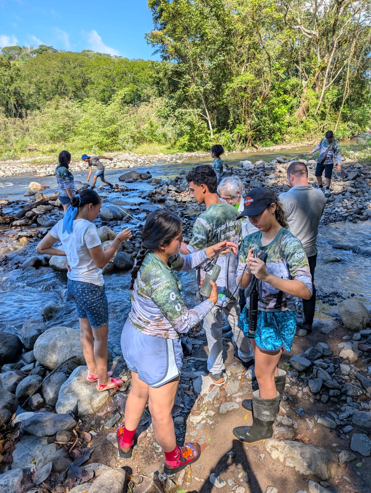

Bajo las organizaciones sombrilla, Alianza de Comunidades por la Defensa del Agua y la Asociación Comunidades Unidas por un Desarrollo Ecológico y Sustentable, trabajamos con más de 20 organizaciones para cuidar lo que nos sostiene.
Nuestro objetivo es preservar este ecosistema vital para las generaciones presentes y futuras. En conjunto con comunidades locales, instituciones educativas y organismos gubernamentales para cuidar nuestra fuente de vida.
Existen estudios científicos sobre los efectos de plantas de concreto: Las emisiones de las máquinas, sumada a la mezcla de polvos de cemento, sílice, agregados y del quebrador- triturador de piedra, pueden causar serios problemas de salud incluyendo problemas en los ojos y la piel, asma y cáncer, contaminar el agua y destruir la vida acuática.
La minería en ríos ha causado ensanchamiento y profundización del lecho y puede reducir la capacidad de recarga de acuíferos y de filtración de impurezas, como patógenos o químicos, en este caso directamente afectando a más de 4000 personas río abajo.
Efectos acumulativos de 11 proyectos los estudios de impacto ambiental no consideran los efectos acumulativos y sinergéticos que podrían tener 11 concesiones que abarcarían más de la mitad del río Guacimal, más la fábrica de concreto y el quebrador en una finca colindante con el río.
Programas educativos en escuelas para crear conciencia sobre las bondades del río.
Por ejemplo, en la feria realizada por el CTT, la Alianza de Comunidades por la Defensa del Agua y el Centro de Sostenibilidad de Costa Rica enseñaron la labor de filtración que la arena y piedra realiza para mantener el agua de los acuíferos sana y limpia y abundante. Más de 4,000 personas río abajo dependen de que este sistema de filtración se mantenga intacto.
El Corredor Biológico Pájaro Campana en conjunto con el Sendero Pacífico vienen organizando caminatas donde se identifican especies de aves, vegetación y otra vida silvestre a desde las montañas de Monteverde hasta la costa del Golfo de Nicoya. Kioscos Socioambientales de la Universidad de Costa Rica en conjunto con la Asociación Ornitológica de Costa Rica apoyó esta iniciativa a través de jornadas de avistamiento de aves para jóvenes y habitantes de las comunidades aledañas al río Guacimal.
Es una manera de educar sobre las bondades del río y todo lo que sustenta, y además sirve para entusiasmar a las nuevas generaciones a involucrarse en actividades saludable y que en un futuro puedan generar un ingreso sustancial como guías naturalistas en esta zona donde ya se practica el turismo rural comunitario
Enlace¿Qué dicen los guías locales sobre los quebradores que se planean para el río Guacimal?Jorge Gonzáles es guacimaleño, estudiante de Maestría en Desarrollo Sostenible y guía de turismo. Video elaborado por TC-590 Defensa comunitaria de territorios.
EnlaceDurante dos días, jóvenes del Liceo Rural de Guacimal se unieron a descubrir avifauna alrededor del Río. Estuvieron acompañados por la Asociación Ornitológica de Costa Rica, el Corredor Biológico Pájaro Campana y guías locales para identificar y registrar distintas especies de aves. En total se lograron identificar 92 especies de aves en los sectores del río Acapulco, Coyolar, Los Ángeles y Guacimal. La cuenca del Río Guacimal se está viendo amenazada por un enjambre de proyectos de minería no metálica, donde llegan a contabilizarse por ahora, hasta 12 concesiones en Cauce de Dominio Público del Río Guacimal. Más información en el siguiente enlace:
Enlace Valentina Hernández, es parte de 10 jóvenes del Liceo de Guacimal y la organización Guazuma, que se sumaron a las 5:00am del sábado 25 de octubre, a una jornada para identificar aves. Recorrieron 4 rutas entre los sectores de río Acapulco, Coyolar, Los Ángeles y Guacimal. ¡Gracias por sus aportes, compromiso y curiosidad por la naturaleza! TCU-590 Defensa comunitaria de territorios, inscrito en Escuela de Sociología, UCR.
EnlaceEl Centro Científico Tropical viene a trabajar con los jóvenes de comunidades aledañas al río Guacimal y para determinar la calidad del agua utilizando análisis de macroinvertebrados .
Comenzando en el 2023 como parte de un proyecto de ciencia ciudadana alrededor de la protección de los ríos, el departamento de Educación Ambiental del Centro Científico Tropical (Reserva Monteverde), los y las jóvenes recibieron una capacitación con exposiciones de personas en temas de monitoreo de aguas para que conozcan lo que se hace desde las diferentes organizaciones. Se tocaron temas de cambio climático con organizaciones locales e internacionales.
Después hubo capacitaciones más específicas con una experta del Instituto Monteverde, Luisa Moreno, quien les enseñó cómo medir las características físico-químicas del agua, y cómo utilizar los macroinvertebrados como bioindicadores de salud del rio. Una vez ya capacitados, los monitoreos comenzaron para convertirse en centinelas y protectores del río en caso de que haya algún cambio en la calidad de agua, que en este momento es buena.
En el 2024 y el 2025, este programa del CTT ha seguido con los monitoreos tanto en la época seca como la lluviosa en alianza con el programa de Adopte una Quebrada del Instituto Monteverde
Trabajamos con un equipo legal con experiencia en el campo ambiental a nivel nacional y este equipo se vincula con el equipo legal y de científicos de la organización sin fines de lucro, ELaw (Environmental Law Alliance Worldwide).
Nuestro equipo legal nacional ha proporcionado muchos servicios pro bono, pero por la inmensa cantidad de trabajo, estamos adoptando la modalidad de costo reducido (sliding-fee scale). Es crucial generar fondos ya que nos enfrentamos a 11 diferentes compañías, cada una con un expediente separado para solicitar el permiso de extracción de la piedra y la arena, dos de las cuales ya están en operación. Todos juntos sumarían más de la mitad de todo el río Guacimal. Un agravante es la existencia de una solicitud para un quebrador y una planta de concreto en una finca colindante al río.
ELaw proporciona apoyo legal y científico gratuito a nuestro grupo legal nacional y están preparados para apoyarnos por los años o meses que sean necesarios.
Nuestro equipo legal ha presentado objeciones formales a los estudios de impacto Hasta el momento se han interpuesto dos recursos legales. También se han gestionado dos audiencias con el gobierno regional, una en el Concejo Municipal de Puntarenas y otra en la Alcaldía Municipal de Puntarenas para expresar nuestras preocupaciones y solicitar un alto (moratoria) hasta que se estudie el alcance verdadero del impacto que tendrían sobre el río.
Únete a nuestras jornadas de campo y actividades comunitarias. Si vives lejos, aún asi puedes hecer mucho. Escríbenos al correo para aprender cómo:
alianzahidrica.pts@gmail.comApoya el fondo legal, de educación y de difusión-comunicación. Si deseas donar para eximirlo de impuestos en los Estados Unidos Americanos, ve a la página de nuestro agente fiscal en ese país. Se llama Global Community Initiatives (www.global-community.org).
Si deseas donar dentro de Costa Rica, puedes hacerlo a las cuentas de colones o dólares de la Asociación Comunidades, que es nuestro agente fiscal nacional. Envíanos un correo para inscribirte para recibir nuestro boletín: alianzahidrica.pts@gmail.com
DonarMonteverde Puntarenas, Ciudad
alianzahidrica.pts@gmail.com
+506 8302-2522
+506 8781-4512